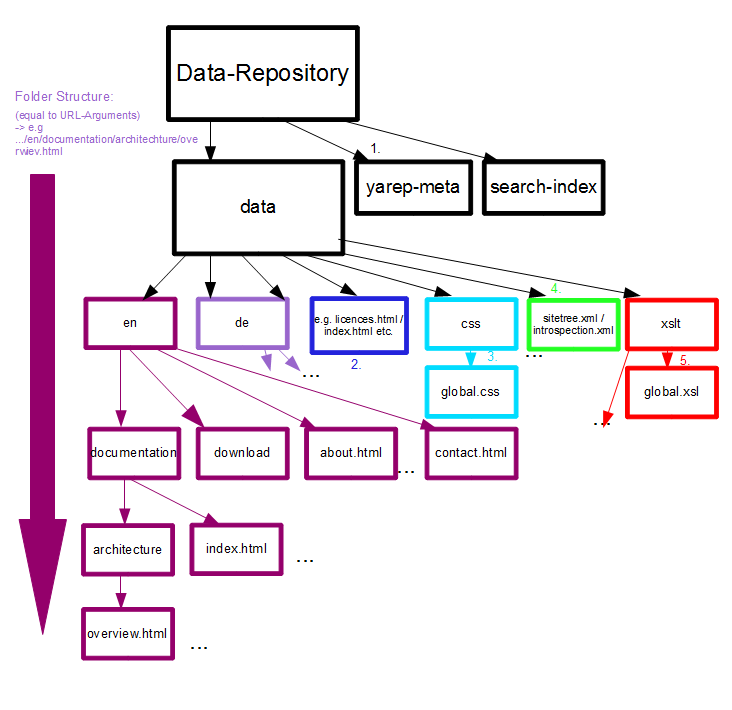

(Last updated June, 2011 revision 58670)

data: Actual contentyarep-meta: Meta informationsearch-index: Lucene search index (fulltext and properties)yarep-meta directory (1), one will find some additional information about the actual content (e.g. last modified, user who created/updated content)data directory (2) contains the webpage index file (index.html), as well as other pages which have the same path as the URL referenced inside the Browser.data/css (3).sitetree.xml file contains the structure of the navigation inclusive their reference.translation.xml file associates the various URLs of the same content in different languages.introspection files provide the meta information for Neutron based editing tools (e.g. Yulup).xslt folder (5).